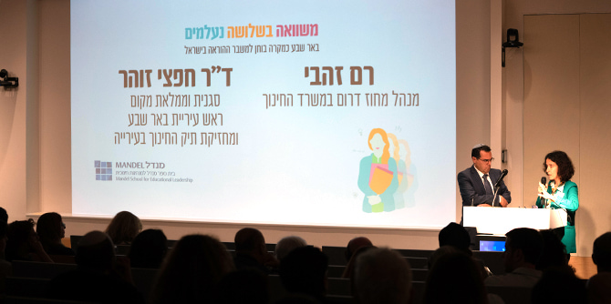
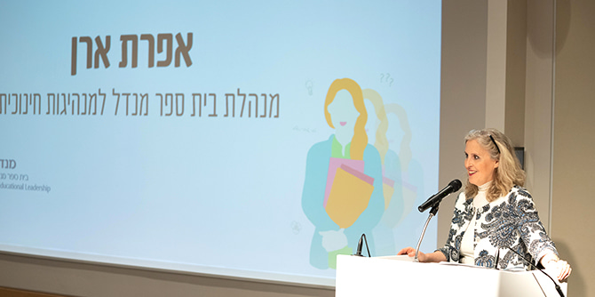
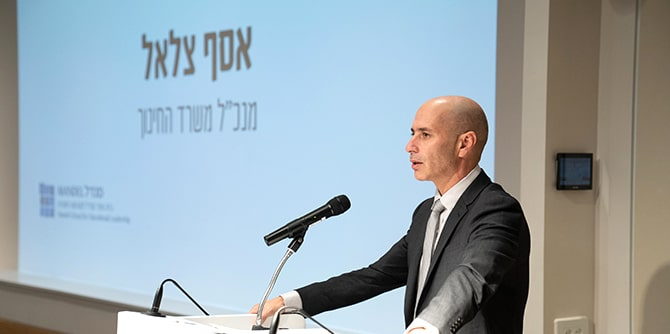

טליה זורוף ואיתי וייס מציגים את התרגיל הקבוצתי (צילום: סימנים הפקות)
התרגיל הקבוצתי הוא אבן דרך משמעותית במסע העמיתים בבית ספר מנדל למנהיגות חינוכית. הוא מזמן לעמיתים הזדמנות לבצע חשיבה משותפת על אחת מהבעיות על סדר היום הציבורי והמוסדי בחינוך.
התרגיל השנה הוזמן על-ידי
רם זהבי, מנהל מחוז דרום במשרד החינוך וד"ר חפצי זוהר, סגנית ראש העיר באר שבע ומחזיקת תיק החינוך בעירייה. השניים ביקשו מהעמיתים לגבש תוכנית אופרטיבית שתעזור לפתור את בעיית המחסור במורים בדרום הארץ.

ד"ר חפצי זוהר ורם זהבי (צילום: סימנים הפקות)
במהלך התרגיל, שארך שלושה שבועות והובל על-ידי העמיתים עצמם בליווי
אפרת ארן, מנהלת בית ספר מנדל למנהיגות חינוכית וד"ר איל שאול וד"ר נטע שר-הדר, חברי סגל בית הספר, למדו העמיתים לעומק את נושא ההוראה והלמידה, ההכשרה וההשמה של מורים ברמה התאורטית וברמה המעשית. הלימוד כלל ביקור בכיתות ומיפוי חומרי מחקר, ומהם נלמדו האתגרים וההזדמנויות באזור העיר באר שבע ובמחוז דרום וגובשו המלצות ותוכניות פעולה. נושא התרגיל היה משמעותי משני היבטים נוספים: האחד, העיסוק בממשל הרב-רובדי, ובעיקר בקשר שבין השלטון המקומי לשלטון המרכזי, והאחר, ההתבוננות בבעיה כלל-ארצית בעדשה מקומית – הסוגייה נבחנה כמקרה בוחן לפתרון ברמה הלאומית.

אפרת ארן, מנהלת בית ספר מנדל למנהיגות חינוכית (צילום: סימנים הפקות)
את ממצאיהם הציגו העמיתים באירוע חגיגי שנערך בבית קרן מנדל בירושלים בנוכחות מנכ"ל משרד החינוך אסף צלאל, בכירים במשרד החינוך, אנשי חינוך מהעיר באר שבע, וחברי קהילת מנדל. מנכ"ל קרן מנדל-ישראל משה ויגדור ומנהלת בית ספר מנדל למנהיגות חינוכית אפרת ארן פתחו את הערב והודו לנוכחים על ההזדמנות לערוך תרגיל לימודי של חשיבה משותפת עם משרד החינוך על פתרון בעיות אמיתיות ובוערות בשדה החינוך. מנכ"ל משרד החינוך
אסף צלאל, יליד העיר באר שבע בעצמו, דיבר על האתגרים ועל החשיבות הרבה שבהשקעה בחינוך בדרום הארץ ובצפונה, והודה לעמיתים על התובנות והתוכניות שפרסו לפני משרד החינוך במסמך ההמלצות. ד"ר איל שאול, דיקן המחזור, דיבר על תהליך הלמידה שעברו העמיתים עצמם במהלך התרגיל.

מנכ"ל משרד החינוך אסף צלאל (צילום: סימנים הפקות)
במהלך הערב הוצגו סרטוני וידאו ובהם דיברו מורים מבתי ספר שונים בבאר שבע על המוטיבציות שלהם, על ההצלחות, הכישלונות, הצרכים שהם מזהים והאתגרים שעמם הם מתמודדים. הסרטונים עזרו לנוכחים להבין את בעיות העומק לא רק כסטטיסטיקות או כנתונים יבשים, אלא כבעיות אמיתיות של בני אדם שמתמודדים עם מציאות חינוכית מורכבת. המלצות העמיתים עסקו בהשגת שלומות למורים כאמצעי לטיוב תהליך ההוראה והלמידה וכאמצעי להנעת שינוי שישפיע על המחסור במורים. הצעותיהם נסובו סביב שלושה מוקדים: בית הספר, העיר והמורה. ברמה הבית-ספרית הוצע לשנות את מבנה יום הלמידה באמצעות הכנסה של צוותים "פרא-חינוכיים". ברמה העירונית המליצו העמיתים ליצור כמה פונקציות מתכללות – הן בהקשר של ניהול ההון האנושי החינוכי בעיר והן ברתימה של גופים עירוניים שונים ללמידה במובנה הרחב. ברמת המורה הוצעו מגוון הצעות המניעות את התפתחות הפרופסיה, בהן הצעה ברמת המדינה הכוללת מודל לעידוד דיור למורים ופיתוח קהילתי סביבם.
בסיום ההצגה הגיבו על התוכנית אייל רם, סמנכ"ל ומנהל מינהל עובדי ההוראה במשרד החינוך, איריס וולף, מנהלת אגף בכיר הכשרה והתמחות עובדי הוראה במשרד החינוך, רם זהבי, מנהל מחוז דרום במשרד החינוך וד"ר חפצי זוהר, סגנית וממלאת מקום ראש העיר באר שבע ומחזיקת תיק החינוך בעירייה. המגיבים הודו לעמיתים על העשרת תהליך החשיבה שלהם והצביעו כל אחד מנקודת מבטו על ההזדמנויות שתרגיל לימודי זה זימן להם.
{kind=link}
{kind=link}
{kind=link}
{kind=link}